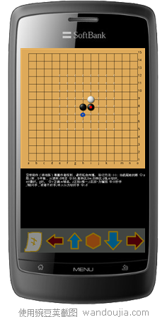
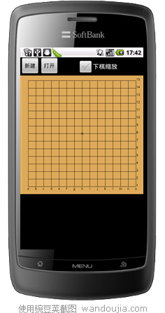
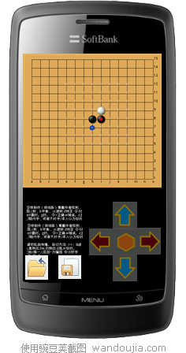

androidlib软件【看谱，速度+注释+标记】-2011-9-19更新
#1 androidlib软件【看谱，速度+注释+标记】-2011-9-19更新 作者：王小 发表时间：2011-8-19 13:18:06
2011-9-19
 AndroidLib.rar
AndroidLib.rar最新版本通过按钮来定位落点，更精确了。

2011-8-19
［ 白衣神童小剑魔 于 2011-8-19 17:48:59 时花20金币送鲜花一朵］
［ 魔铃 于 2011-8-20 18:48:08 时花20金币送鲜花一朵］
［ 小红眼镜 于 2011-8-29 19:55:54 时花20金币送鲜花一朵］
［此帖子已被 有志青年 在 2011-9-19 9:29:34 编辑过］
［此帖子已被 有志青年 在 2011-9-19 9:34:31 编辑过］
［此帖子已被 有志青年 在 2011-9-19 9:36:44 编辑过］
［此帖子已被 有志青年 在 2011-9-19 9:42:16 编辑过］
［ 黄药师 于 2011-9-19 20:04:08 时奖励此帖[金币加 100 威望加1］
［ 小红眼镜 于 2011-9-19 23:07:30 时花20金币送鲜花一朵］
#2 Re:android 看谱，速度+注释+标记 作者：小元 发表时间：2011-8-19 15:23:22
楼主更新速度加快了很多
#3 Re:android 看谱，速度+注释+标记 作者：有志青年 发表时间：2011-8-19 17:44:57

一直在使用中，很强大的软件
在全盘状态下，下方的空白区域是否可以利用起来呢。
例如放上下左右控制键，通过比较大一些的控制键来确定落点，比粗粗的手指头更精确一些呢。
#4 Re:android 看谱，速度+注释+标记 作者：逆刃 发表时间：2011-8-19 17:51:29
恩，可以参考QQ游戏的五子棋设计。#5 Re:android 看谱，速度+注释+标记 作者：魔铃 发表时间：2011-8-20 18:47:46
期待棋盘可以整体缩放
#6 Re:android 看谱，速度+注释+标记 作者：aiban 发表时间：2011-8-24 13:23:02
正在找这种软件，顶楼主先。#7 Re:android 看谱，速度+注释+标记 作者：小红眼镜 发表时间：2011-8-29 19:55:39
期待更多功能哈~~
#8 Re:android 看谱，速度+注释+标记 作者：菜菜学徒 发表时间：2011-8-31 19:22:49
有没有塞班5版的，或者3版的，到处找不到啊
#9 Re:androidlib软件【看谱，速度+注释+标记】-2011-9-19更新 作者：佛心诚 发表时间：2011-9-19 17:03:15
JAVA的表示遗憾，看来得换手机了#10 Re:androidlib软件【看谱，速度+注释+标记】-2011-9-19更新 作者：小红眼镜 发表时间：2011-9-20 0:17:05
又更新了哈哈哈。楼主加了个油。。
#11 Re:androidlib软件【看谱，速度+注释+标记】-2011-9-19更新 作者：starrj 发表时间：2011-9-27 10:12:24
LZ辛苦了~期待功能越来越完善~#12 Re:androidlib软件【看谱，速度+注释+标记】-2011-9-19更新 作者：有志青年 发表时间：2011-9-28 18:29:19

新版本建议图
说明：
1、注释文字不会非常多，字体可以适当再大一号
2、方向键的位置可以再便捷一些
3、是否增加一个另存为的功能，将当前盘面的棋谱保存为sfg格式的文件（单分支），纯文本格式，仅文件扩展名为sfg，爱五子棋网的棋谱库打包下载的就是sfg格式。
#13 Re:Re:androidlib软件【看谱，速度+注释+标记】-2011-9-19更新 作者：白衣神童小剑魔 发表时间：2011-9-28 22:15:12
版主，你的手机屏幕比较大，我的连注释都看不全，方向键是一横排的#14 Re:androidlib软件【看谱，速度+注释+标记】-2011-9-19更新 作者：沈毅 发表时间：2011-10-2 15:09:26
 触摸屏上还用方向键来落子。。。究竟是前进还是倒退呢。。。
触摸屏上还用方向键来落子。。。究竟是前进还是倒退呢。。。
#15 Re:Re:androidlib软件【看谱，速度+注释+标记】-2011-9-19更新 作者：有志青年 发表时间：2011-10-2 20:18:46
引用：
原文由 沈毅 发表于 2011-10-2 15:09:26 :
电容屏的手机，用手指头去点击棋盘，很难控制精准。
电阻屏的，用笔尖倒是容易一些。
qq游戏在安卓系统中的五子棋，是通过和本软件作者一样的，先点击放大棋盘，之后点击确认落点的方法来操作的，但，还不如方向键控制落点来的直观和全面。
#16 Re:androidlib软件【看谱，速度+注释+标记】-2011-9-19更新 作者：天上掉个馅饼 发表时间：2011-10-15 22:19:09
看着挺好看的，下来#17 Re:androidlib软件【看谱，速度+注释+标记】-2011-9-19更新 作者：千年 发表时间：2011-11-18 20:35:04
我试了以sgf,z5,lib,bbs,fg1,pos和lws为后缀的棋谱文件，怎么都打不开？我的手机是DEXT#18 Re:androidlib软件【看谱，速度+注释+标记】-2011-9-19更新 作者：一盏幽冷 发表时间：2011-11-25 20:05:39
可惜我的是塞班的#19 Re:androidlib软件【看谱，速度+注释+标记】-2011-9-19更新 作者：yidefei 发表时间：2012-7-26 11:13:10
这款软件还有更新吗？我这边是找不到在哪里打开棋谱。#20 Re:androidlib软件【看谱，速度+注释+标记】-2011-9-19更新 作者：海月 发表时间：2012-9-23 23:37:46
有没有支持苹果手机的
#21 Re:androidlib软件【看谱，速度+注释+标记】-2011-9-19更新 作者：加菲老猫 发表时间：2012-11-25 23:03:54
速度很快，佩服#22 Re:androidlib软件【看谱，速度+注释+标记】-2011-9-19更新 作者：加菲老猫 发表时间：2012-11-25 23:06:51
老大，能请教你是怎么做到这么快的吗，我自己学习android，也做了一个，我是把整个文件读到内存，不知道你怎么处理的。棋谱还有些没搞定，比如04我就不知道是什么关系。#23 re:androidlib软件【看谱，速度+注释+标记】-2011-9-19更新 作者：刘琦林 发表时间：2012-11-27 17:58:41
希望能有保持功能。。。#24 Re:androidlib软件【看谱，速度+注释+标记】-2011-9-19更新 作者：华夏小宝 发表时间：2013-4-23 16:54:25
非常适合我480×320屏幕的手机 真心表示对王小童鞋的感谢啊#25 Re:androidlib软件【看谱，速度+注释+标记】-2011-9-19更新 作者：超级菜鸟徒弟 发表时间：2013-12-2 22:15:02
非常感谢呀，手机上可以打谱了#26 Re:androidlib软件【看谱，速度+注释+标记】-2011-9-19更新 作者：周承望 发表时间：2014-3-2 21:56:55
期待继续更新！